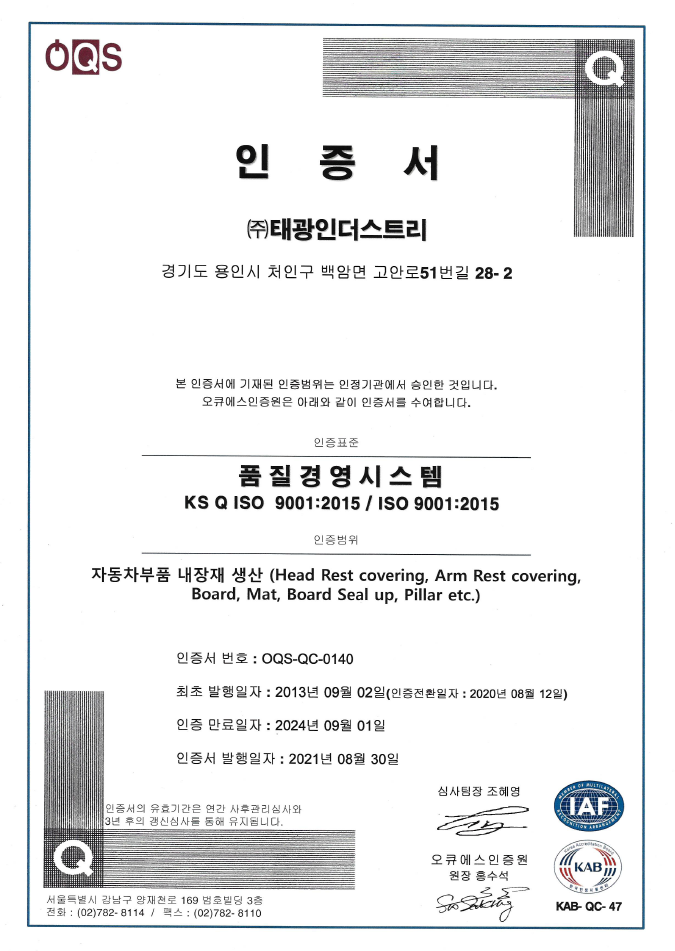
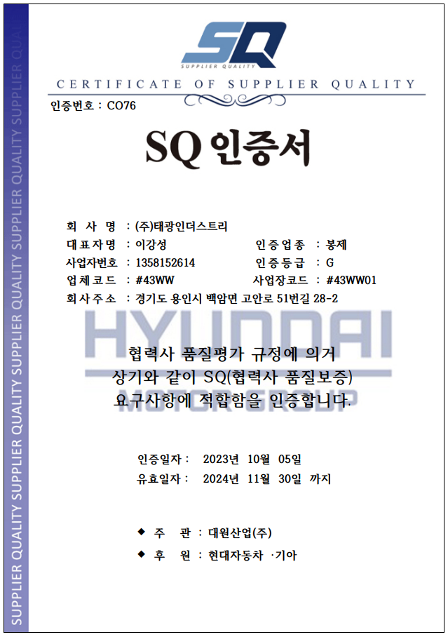
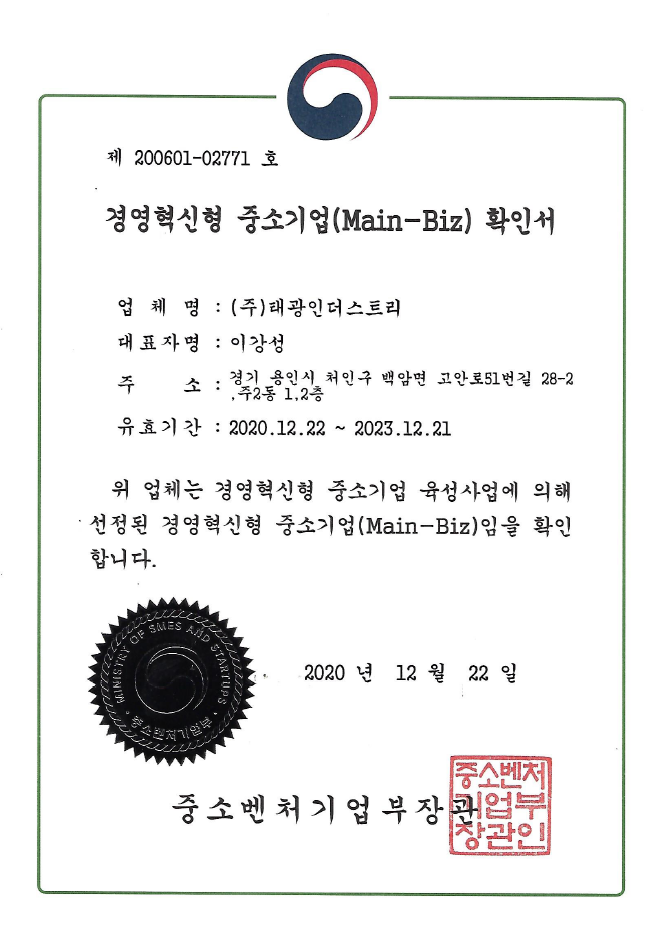
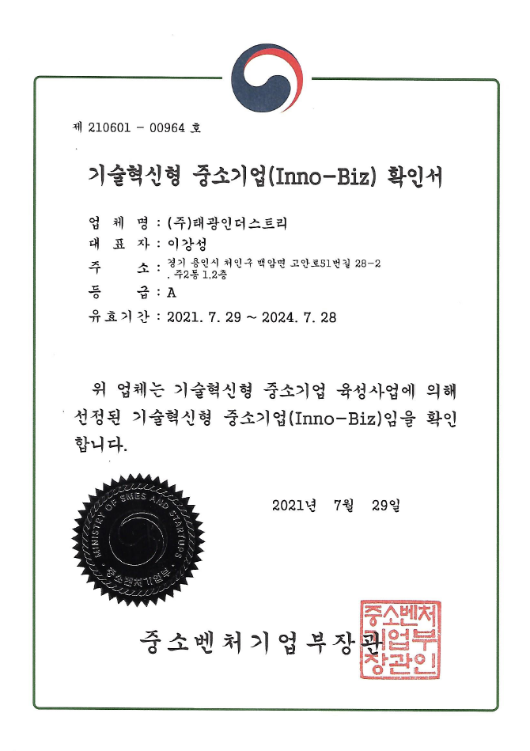
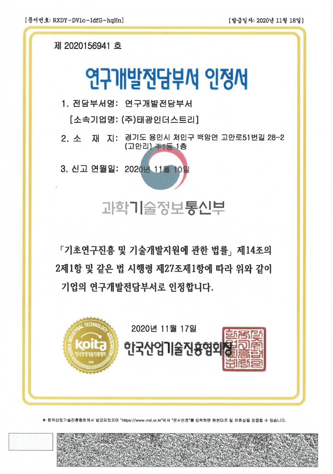
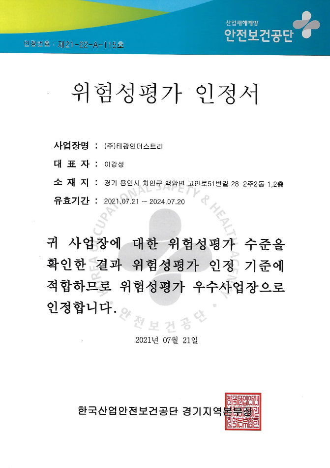
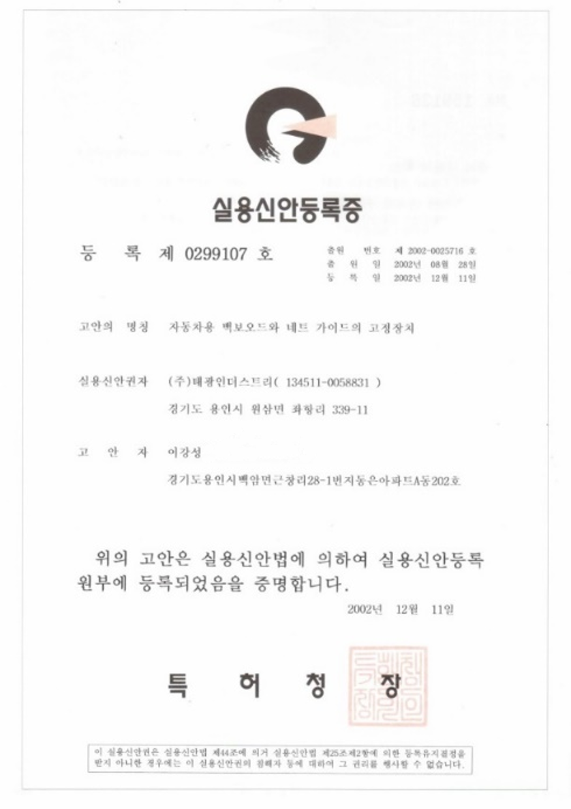
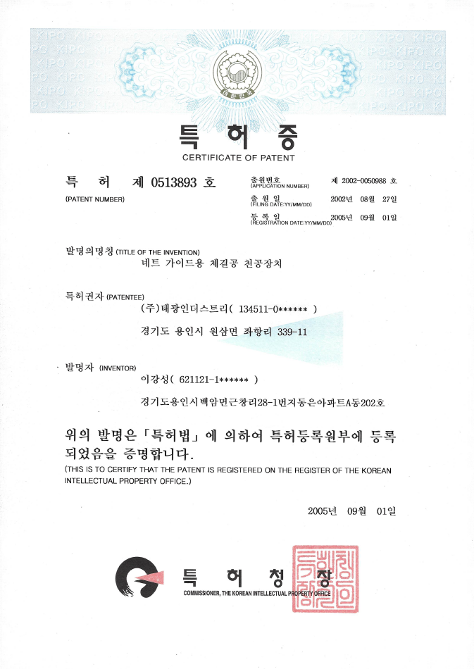
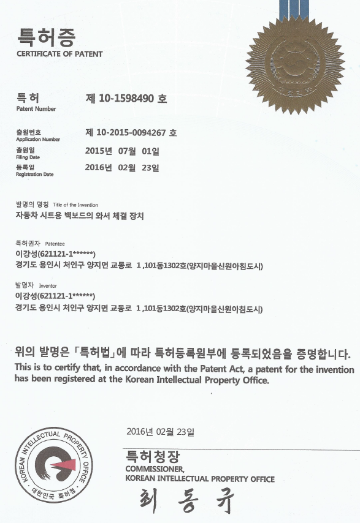
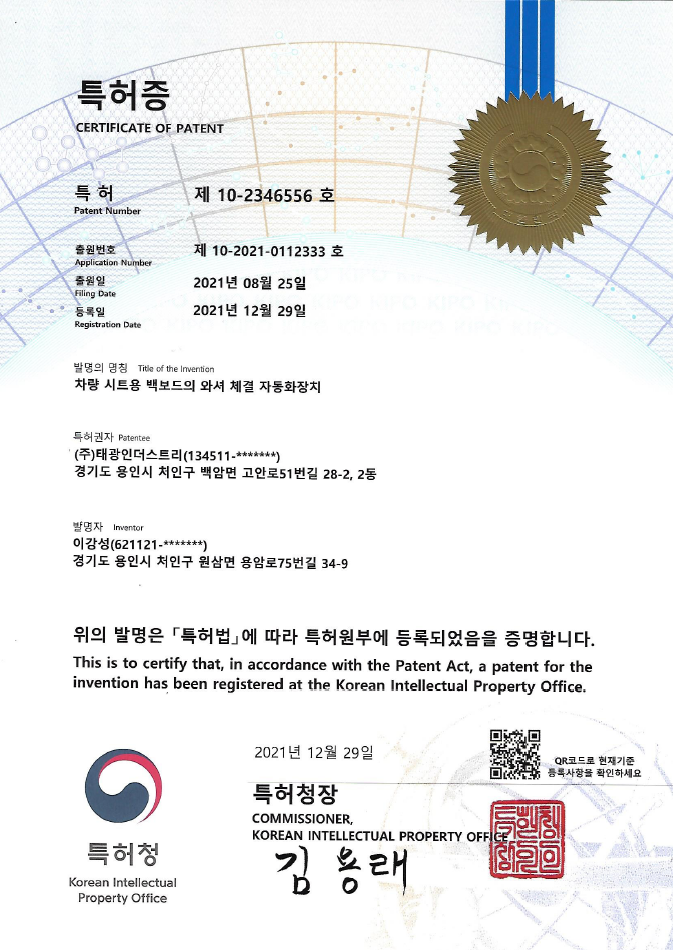

ISO 9001:2015
품질경영시스템
설비와 검사 장비, 글로벌 품질 인증을 기반으로 고객이 요구하는 품질 기준을 충족합니다.
재단부터 봉제·융착·조립까지 일관 생산이 가능한 설비를 보유하고 있습니다.
원단 연단·재단
1대재단 타발 가공
1대재단 타발 가공
1대봉제
22대봉제
8대봉제
5대봉제
3대봉제 마감
4대봉제
4대봉제
2대심 씰링
3대부자재 융착
5대조립·접착
2대부자재 융착
1대원단 접착
2대치수·물성·환경 신뢰성 검사를 위한 측정·시험 장비를 운영합니다.
조도 측정
200~200,000 LUX치수 측정
0.01~300mm치수 측정
0.01~200mm두께 측정
0.01~10mm회전수 측정
0.3~25,000중량 측정
100g~30kg난연성 시험
MS 300-08품질·기술·경영 부문의 인증과 지식재산권을 보유하고 있습니다.

품질경영시스템

완성차 협력사 품질

경영혁신형 중소기업

기술혁신형 중소기업

기업부설 연구조직 인정

위험성평가 인정 사업장

실용신안권 보유

지식재산권 보유

지식재산권 보유

지식재산권 보유